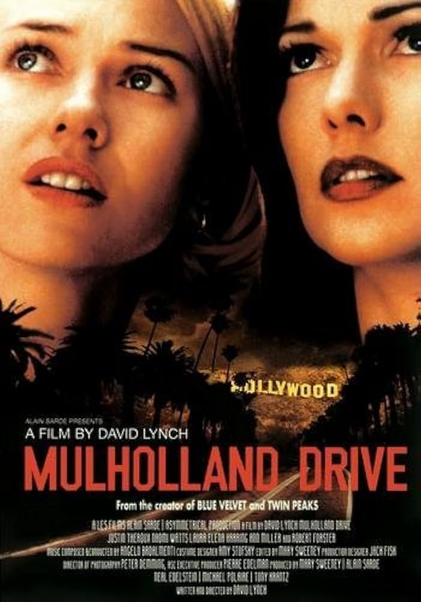
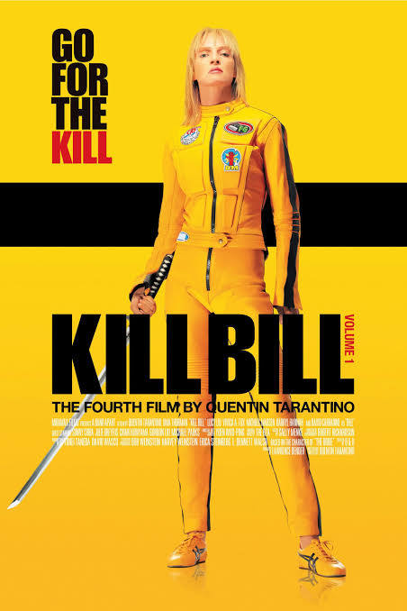

Now, this page was a struggle for me. I could not figure out what to do here. Ever idea I had I did not like.
I had literally tried out so many things that it
got to the point where
I almost scrapped the whole page. I was coming empty handed and it was KILLING ME. But as
you can see I didn't go on to scrap it. I kept it and made something beyond your imagination.
From the last website, this page had focused on you.
I have decided that will not change. I did not do the exact same thing as before but
the concept remains the same. I won't spoil the surprise but just know
this is a YOU page. As mentioned above, it was a struggle. It really took the last 4 brain cells that were left in me at the time to created
this. So shout out to them because I don't know how I did it. But I did it and I think I killed it. I find myself coming here to just have fun and appreciate what I did.
Which reminds me, there are two easter eggs in this page.
Will you be able to find them? I'll give you a hint. One is on the page while the other is not. Confusing? Well, that's all I can say without giving them away.
Anyways, just know this is my favorite page and despite the journey having been terrible, it was all worth it. So I hope you enjoy this page because it took me hours to get it right.
I hope you are doing okay. It has been quite a while. Three weeks,
going to four. Time sure flies. I hope life is better for you. Easier. Manageable.
I had told you that if you did not want me to continue sending you my projects, you could tell me. This still
stands. You know the last thing I want to do is make you uncomfortable. So please, feel free to tell me. I
can take it. Just don't leave me hanging. That I cannot take😭
You're a big movie fanatic. I have honestly not met anyone that loves movies as much as you do.
We grew up watching a lot of the same movies but there are some that I have not watched that you
have mentioned. From the section above I have only watched two out of the four and only really liked
one of them. Can you guess which I one love dearly?
I find it funny that you loved any movie that had
a dog in it because now that I think about it I did too😭 I remember being obsessed with Oliver
and Company, especially Dodger. Did you ever watch Old Yeller or Hotel for Dogs or Homeward Bound? Classics.
Returning to the topic at hand😂 I remember you said you LOVED Mulholland Drive. Well...I can't say the same😭
I was hooked the first half but then got lost at some point. Then the ending came and I was like ????? I think
I need to watch it again because if you loved it that much clearly I should give it another shot.
The Hunger Games, as you know,
I have not watched any of them. I've also never seen Kill Bill but it does looks awfully familiar. Not sure why
but the poster reminds me of the movie Scott Pilgrim. Did you ever watch that movie? Okay I'm just remembering
there's a new Tron movie coming out! I was not aware until recently. I don't remember what the first one consisted of but I remember liking it.
Now, the last movie left: Balto. I fricking love that movie so much that I drew something from it when
I was a kid and is now a center piece in my room. If that is not enough to prove that I love that movie
so much,
I have both the DVD and the VHS for it. Also, the last time we hung out you had asked me if I had a comfort movie.
Well, Balto is definitely one of them.
Please wear headphones before continuing.
Music. You love music. You love consuming it and creating it. It is one of those things that is important to you. So I could not make this page for you without there being a music section. I have chosen some songs which I will not be disclosing. There will be no give away of the name of the song or the artist. You will have to go through each one of them on your own to get those answers. I will say all these songs were on repeat as I was working on this page. So you can thank these songs for setting the tone here. There isn't much else I can say so go ahead and give them a listen.***Hover over image